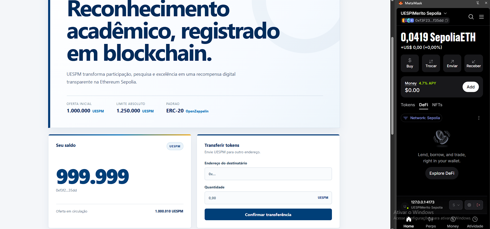
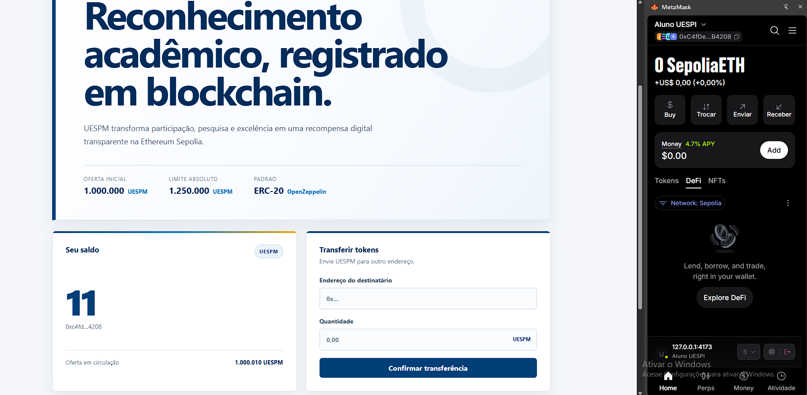

Token ERC-20 para recompensas acadêmicas, com emissão controlada, queima, pausa emergencial e integração Web3.
O UESPIMérito foi concebido para reconhecer atividades que geram valor à comunidade universitária: pesquisa, extensão, monitoria, participação em eventos e desempenho. O token funciona como registro transferível de mérito em uma rede pública de testes. Não representa participação societária, promessa financeira ou investimento.
| Finalidade | Percentual | Quantidade |
|---|---|---|
| Recompensas acadêmicas | 60% | 600.000 UESPM |
| Pesquisa e extensão | 20% | 200.000 UESPM |
| Eventos e formação | 10% | 100.000 UESPM |
| Reserva institucional | 10% | 100.000 UESPM |
A oferta inicial é emitida ao administrador no construtor. Emissões posteriores exigem MINTER_ROLE e nunca podem elevar o supply acima do teto. O mapeamento público academicRewardsMinted registra quanto foi emitido diretamente como recompensa para cada beneficiário.
A queima é voluntária pelo titular. A pausa não altera saldos; apenas interrompe temporariamente transferências, mint e burn.
transfer.O projeto não recebe nem armazena frase-semente ou chave privada. A custódia permanece na carteira.
constructor(address initialAdmin)
mapping(address account => uint256 amount) public academicRewardsMinted;
function mint(address beneficiary, uint256 amount)
public onlyRole(MINTER_ROLE)
function pause() public onlyRole(PAUSER_ROLE)
function unpause() public onlyRole(PAUSER_ROLE)
O contrato expõe explicitamente totalSupply, balanceOf e transfer, delegando à implementação OpenZeppelin para preservar a compatibilidade ERC-20.
| Ameaça | Mitigação |
|---|---|
| Inflação não controlada | Cap de 1.250.000 UESPM aplicado em todo mint. |
| Uso indevido de funções críticas | Papéis separados para emissão, pausa e administração. |
| Entradas inválidas | require para administrador, beneficiário e quantidade. |
| Incidente operacional | Pausa bloqueia transferências, mint e burn. |
| ABI divergente | Exportação automática a partir do artefato compilado. |
Os papéis iniciais ficam concentrados no deployer para simplificar a avaliação. Em uso institucional, o administrador deve ser uma multisig e os papéis operacionais devem pertencer a contas diferentes. O projeto não substitui auditoria independente.
A auditoria npm retornou 0 vulnerabilidades no frontend. A toolchain de desenvolvimento registrou 25 avisos transitivos; a correção total exige mudanças major incompatíveis e deve ser tratada em migração controlada, sem --force nesta versão reproduzível.
A aplicação React foi desenhada para uma demonstração direta: primeiro comunica propósito e tokenomics; depois concentra saldo, supply, transferência e status. O painel administrativo só aparece quando hasRole confirma permissões on-chain.
VITE_CONTRACT_ADDRESS=0xe0b6a9d39C90C5DE7772Bf3c74753Faa487A10e8
Após o deploy, a variável foi preenchida com o endereço real, o bundle foi reconstruído e as leituras e transações passaram a usar o contrato publicado.


| Grupo | Cenários validados | Resultado |
|---|---|---|
| Implantação | Nome, símbolo, decimais, supply, saldo inicial e admin zero | Aprovado |
| Acesso | Papéis iniciais, mint/pause não autorizados, concessão e revogação | Aprovado |
| ERC-20 | Transferência, evento, saldos e saldo insuficiente | Aprovado |
| Mint | Registro de recompensa, zero address, zero amount e teto | Aprovado |
| Burn | Queima pelo titular e redução de totalSupply | Aprovado |
| Pause | Bloqueio de transfer/mint/burn e retomada | Aprovado |
O build Vite transformou 177 módulos. Após divisão do bundle, os chunks minificados ficaram em 240,77 kB (aplicação) e 261,34 kB (ethers.js), sem alerta de tamanho. O servidor de preview respondeu HTTP 200.
A primeira instalação revelou incompatibilidade entre Chai 5 e o matcher do Hardhat; foi fixada com Chai 4 compatível. O primeiro build encontrou restrição do sandbox no carregador esbuild; o carregador runner do Vite resolveu o problema sem ignorar verificações.
O contrato foi implantado após autorização expressa e seu código-fonte foi verificado publicamente no Etherscan. As leituras on-chain confirmaram nome, símbolo, supply, saldo inicial, papéis e estado não pausado.
0xe0b6a9d39C90C5DE7772Bf3c74753Faa487A10e80x9716c168aad414576bd09570efdb58e006a079ddb0be6e3e0e7b81d2018359d7Etherscan: sepolia.etherscan.io/address/0xe0b6...A10e8#code
| Operação | Gas usado | Preço do gas | Custo |
|---|---|---|---|
| Deploy | 7.450.016 | 1 gwei | 0,007450016 SepoliaETH |
| Transferência | 143.183 | 1,500000015 gwei | 0,000214774502147745 SepoliaETH |
| Mint de 10 UESPM | 159.737 | 1,500000014 gwei | 0,000239605502236318 SepoliaETH |
| Pause / unpause | 129.092 / 24.937 | 1,500000014 gwei | 0,000231043502156406 SepoliaETH |
A transferência de 1 UESPM foi confirmada no bloco 12.170.133, hash 0x9b35a41d...f9d432. O mint, pause e unpause foram confirmados nos blocos 12.170.854, 12.170.873 e 12.170.882. Durante a pausa, uma transferência foi recusada antes do envio. Custos calculados por gasUsed × effectiveGasPrice.
name: UESPIMerito symbol: UESPM totalSupply: 1.000.000 paused: false MINTER_ROLE: true PAUSER_ROLE: true
Estado após a demonstração: totalSupply 1.000.010 UESPM, aluno 11 UESPM e operações retomadas.
Usar somente carteira de teste dedicada. Nunca solicitar ou registrar frase-semente.
O UESPIMérito entrega um ERC-20 original e compatível, com propósito acadêmico, supply limitado e três extensões: mint, burn e pause. O uso de OpenZeppelin reduz reinvenção de componentes críticos, enquanto os testes negativos demonstram limites e permissões.
O frontend oferece uma experiência moderna e responsiva para MetaMask e Sepolia, incluindo leitura de saldo, transferência, status e controles administrativos condicionados aos papéis. Compilação, testes, cobertura e build foram executados localmente.
| Critério | Entrega | Estado |
|---|---|---|
| Smart contract | ERC-20, constructor, mapping, require e funções públicas | Concluído |
| Extras | Mint, burn e pause | Concluído |
| Frontend | MetaMask, Sepolia, saldo, transfer e administração | Concluído localmente |
| Testes | 14 aprovados e cobertura integral | Concluído |
| Deploy real | Sepolia, recibo e código verificado | Concluído |
| Relatório e vídeo | PDF e roteiro de 4min40s | PDF concluído; gravação pendente |
Repositório público: github.com/AlvaroMelo66/UESPIMerito
A matriz detalhada de 45 requisitos acompanha o código-fonte. Todos os marcadores pendentes devem ser substituídos apenas por evidência real.